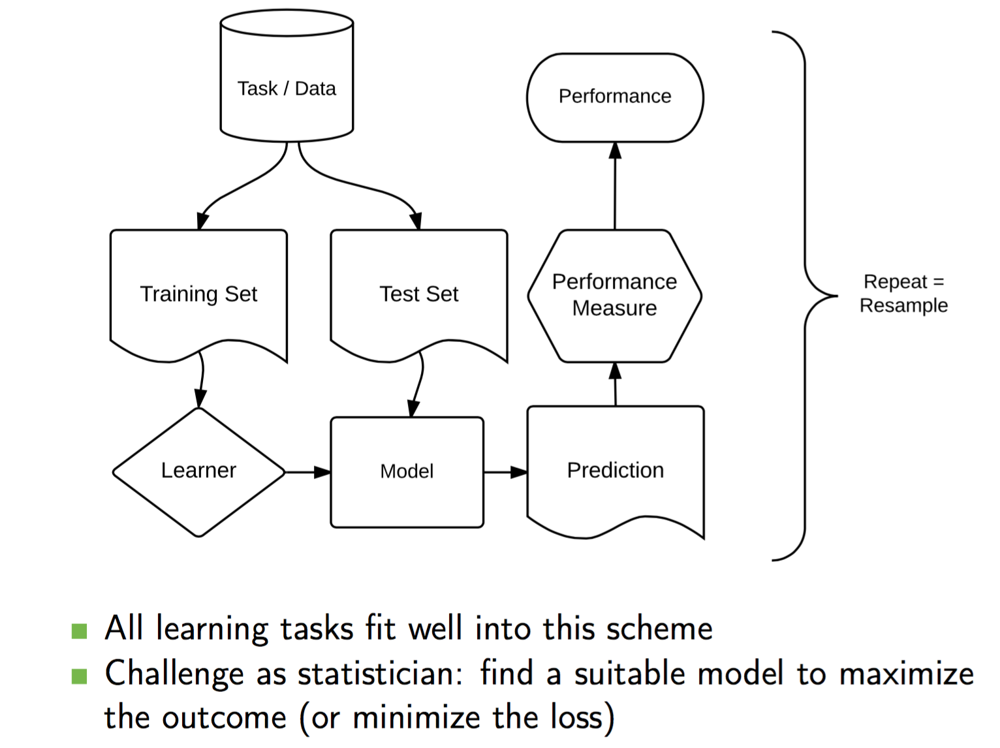
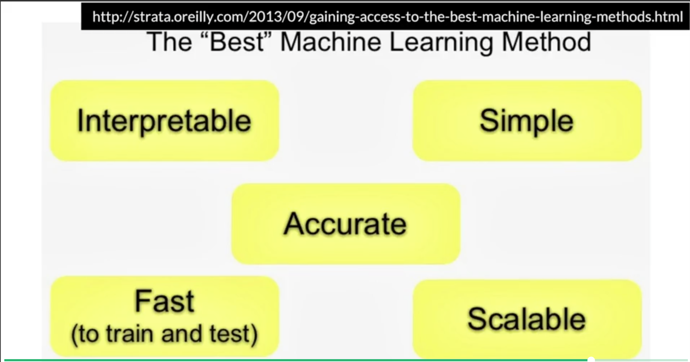
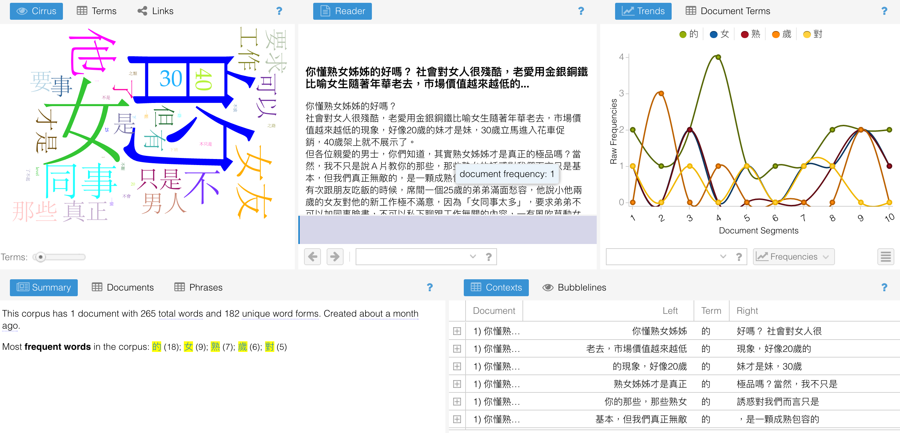
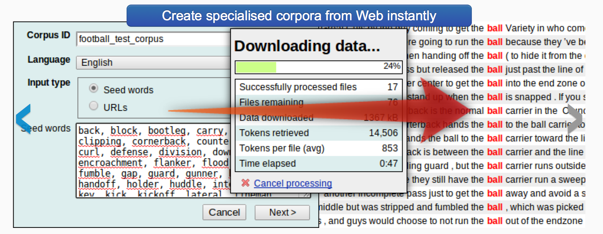
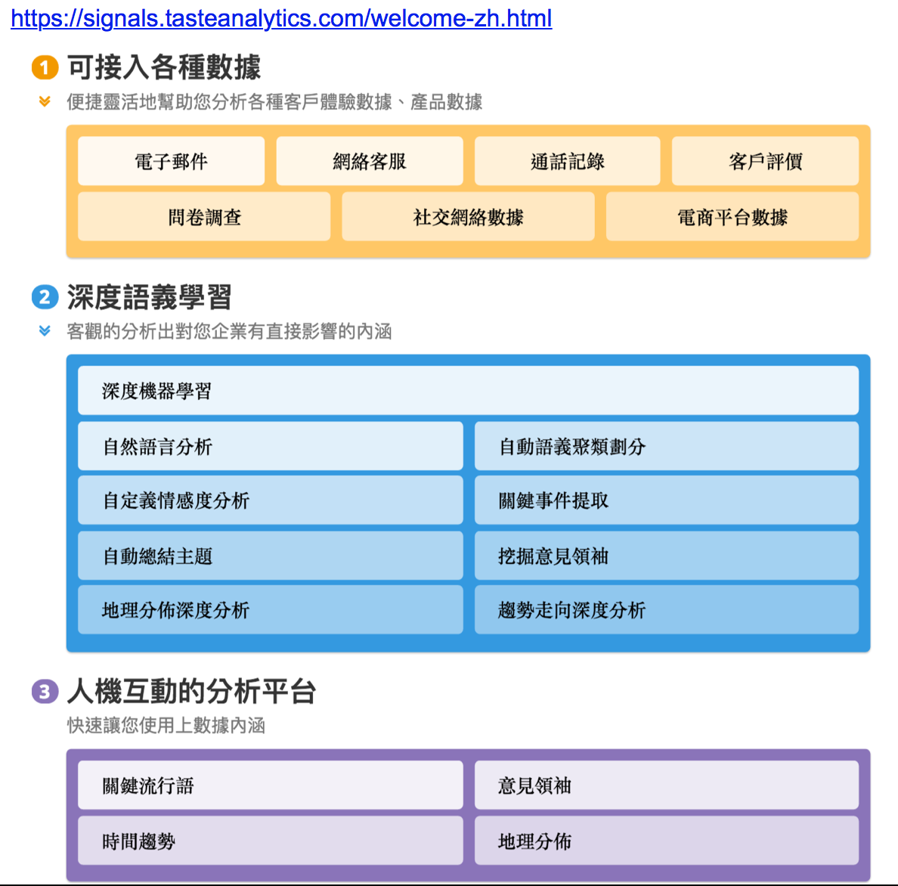

Introducing Data Science with R
week.12
謝舒凱 Lab of Ontologies, Language Processing and e-Humanities
GIL, National Taiwan University
大綱
Data Modeling : Machine Learning- Text Analytics and NLP
- Lab
課堂回饋討論
- 個人 / 團體
下次與各組討論組別作業；開始沒有作業的期末人生，由各組討論與分工的分享共筆取代。
- 自學
資料科學的基本能力 是什麼
- Efficient coding?
- Problem solving?
- Human-centered Design/engieneeting?
課程微調整
| Week | Date | Topic | Lab |
|---|---|---|---|
| 12 | 12/01 | Data Modeling: Machine Learning / NLP [1] | |
| 13 | 12/08 | Data Modeling: Machine Learning / NLP [2] / Proposal discussion | |
| 14 | 12/15 | Integrated Lab session (via kaggle) / Proposal due |
|
| 15 | 12/22 | Data Modeling: Machine Learning / NLP [3] | |
| 16 | 12/29 | Reporting and Presenting Data | Web application with Shiny/Dashboard |
| 17 | 01/04 | Term project competition/presentation | |
| 18 | 01/11 | Selected projects presentation / Final term project and report due |
邁向研究 and/or 解決實際問題
There is a massive disconnect between what is taught in universities and what is done on a daily basis at startups.
- 選擇優秀組別作業投稿 http://group.dailyview.tw/
Review
Preparing / Preprocessing text and data.
- Text is unstructured or partially structured data that must be prepared for analysis. We extract features from text. We define measures.
- Quantitative data are messy or missing, too They may require transformation prior to analysis. Data preparation consumes much of a data scientist’s time.
Exploratory data analysis and Infographics (data visualization for the purpose of discovery. We look for groups in data, find outliers, identify common dimensions, patterns, and trends.)
Prediction models (Regression; Classification and Clustering;) and Evaluations (Recommender systems, collaborative filtering, association rules, optimization methods based on linguistic heuristics, as well as a myriad of methods for regression, classification, and clustering fall under the rubric of machine learning).
Machine Learning
- AI 的一個子領域。（參見林軒田老師的線上課程）
- 監督式 supervised vs. 非監督式 unsupervised
- 可以用中文斷詞問題來想
- 圖解法入門：基本概念與決策樹
整體架構流程

機器學習：效能評估(Performance measure)的基本量度
- Recall
- Precision
- F-score
http://www.cnblogs.com/bluepoint2009/archive/2012/09/18/precision-recall-f_measures.html
Annotation and Feature Engineering
- Study of recorded human communication
- Summary and quantitative analysis of communicated messages
- Researcher looks for patterns/themes in text; develops
code frameto categorize text. - Essentially, variables are extracted from text: Based on scientific method; establishes objectivity via inter-coder reliability.
Annotation and Feature Engineering: Pros and Cons
優點
- flexible; theoretically-motivated annotation/code frame effrots
- can apply to texts, speech, video, etc.
- 可以用來解決一般機器學習系統 high precision low recall 的問題。把潛在的語意與情緒發掘出來。
缺點
- manually intensive
- thus can be expensive
手工標記資料
最簡單可以用 Excel 來做：
- One (or more) column(s) for text data； One column for topic label (as
gold standard) - 通常至少有多於 3000 份標好的文件。
- One (or more) column(s) for text data； One column for topic label (as
大型的專案要考慮到永續、相容、交換等問題，建議使用標記系統。
- 語料庫和語言處理社群
GATE - 質性研究社群
CAT (Coding Analysis Toolkit) - lopetator
- 語料庫和語言處理社群
labeling 和 annotation 的差異之後再談。
機器學習程式實作基本流程
- [
create_matrix] Import your hand-coded data into R - [
create_corpus] 把「不相關」的資料移除，建立訓練語料 (training dataset) 與測試語料 (test data) - [
train model(s)] Choose machine learning algorithm(s) to train a model - [
build (classification) model(s)] Test on the (out-of-sample) test data; establish accuracy criteria 了解成效。 - [
apply (classification) model(s)] Use model to classify novel data - [
create analytics] 把自動分錯的資料找出來 Manually label data that do not meet accuracy criteria
Machine Learning: The Best Method?

實作
為解決各種演算法的套件分散問題 (similar to
Scikit-Learnlibrary in Python)mlr, a recent package which is incredible at performing various machine learning tasks.
The entire structure of this package relies on this premise:
- Create a Task (loading data)
- Make a Learner (choosing an algorithm)
- Train Them.
take up a classification problem.
install.packages('mlr')
listLearners("classif")[c("class","package")]
library(mlr)
data(iris)
## Define the task
task = makeClassifTask(id = "tutorial", data = iris, target = "Species")
## Define the learner
lrn = makeLearner("classif.lda")
## Define the resampling strategy
rdesc = makeResampleDesc(method = "CV", stratify = TRUE)
## Do the resampling
r = resample(learner = lrn, task = task, resampling = rdesc, show.info = FALSE)
## Get the mean misclassification error
r$aggr
先用這個來練習看看
train <- read.csv("../../../data/csv/train_loan.csv", na.strings = c(""," ",NA))
test <- read.csv("../../../data/csv/test_loan.csv", na.strings = c(""," ",NA))
# Exploring data
summarizeColumns(train) # 和 str() 比較看看
大綱
- Data Modeling: Machine Learning
Text Analytics and NLP- Lab
圖示

{kind=link}
文本資料探索分析: A missing part
- Textual statistics (local and global)
- Textual data transformatio: from textual information to numerical vectors
- Corpus-based analysis and manual annotation (e.g., conversation structure)
Text Analytics / Text Mining
a typical text analysis process:
- collecting raw text,
- representing text,
- using Term Frequency-Inverse Document Frequency (TFIDF) to compute the usefulness of each word in the texts,
- categorizing documents by topics using topic modeling,
- sentiment analysis, and
- gaining greater insights.
如何能？！語言資源 與 自然語言處理 ！！
語料庫：概念
- 語料庫 (Corpus) 是自然語言處理與文本解析的基礎建設。 a large collection of texts used for various purposes in Natural Language Processing (NLP).
- 標記 (annotation) 是核心。It's linguistic in nature.
Good annotations support good applications
語料庫：工具
一般主要提供以下功能：
- Corpus building and indexing
- Concordance
- Frequency list
- (Grammatical) Collocations (and colligations)
- Keywords
- Thesaurus
- ngram
- Visualization
語料庫：工具
http://voyant-tools.org/?corpus=7fda0cccc3e3da40ce4f6b5c38347689

語料庫：網路服務
- 較具特色的(商用)系統：Word Sketch Engine
- 較具特色的(開放)系統 COPENS <- 敝帚自珍

NLP 變成是許多新創數據公司的最愛

NLP
- 先用一個網路服務來初步理解：BosonNLP
大綱
- Data Modeling: Machine Learning
- Text Analytics and NLP
Lab
大數據時代的工具平台
閱讀、觀察與實作
- 沒有捷徑
- 多做練習
- (給有力氣自學的同學) https://plot.ly/r/github-getting-started-for-data-scientists/